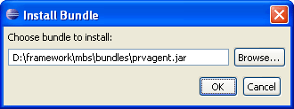

mToolkit offers options for convenient installation and uninstallation of bundles directly from the Eclipse development environment.
mToolkit offers several ways to install a bundle on a connected OSGi framework depending on whether you have it in the workspace (as a "raw" plug-in project or as a JAR file) or it is located outside the workspace.
You can install a bundle from the workspace on a connected OSGi framework if there is an active plug-in project dedicated to the bundle or if the bundle is built in a JAR file.
To install a bundle from your Eclipse workspace, in one of the Eclipse navigation views (e.g. Package Explorer) right-click the plug-in project node or the JAR file node and select the target framework from the Install to menu. If you are installing the bundle from a plug-in project, the plug-in project will be built and exported to a JAR file. Then, the JAR file will be transferred to the OSGi framework and installed. In case you are installing the bundle by using a ready JAR file, the file will be directly deployed on the framework.
On success, the installed bundle will appear under the Bundles node of the framework-specific tree. Bundles being installed are not started automatically - you have to start them by yourself.
To install a bundle from the Frameworks view:

Figure 1: Choosing the bundle to install
On success, the installed bundle will appear under the Bundles node of the framework-specific tree.
To uninstall an installed bundle from the target OSGi framework, in the Frameworks view select the bundle from the framework's tree, right-click it and use Uninstall Bundle. To uninstall several bundles with a single operation, simply select all of them in the framework's tree before selecting Uninstall Bundle.
Note: You are not allowed to uninstall bundles of category "system" as mToolkit expects that such bundles provide vital system functionality and that uninstalling one of them might lead to loss of important OSGi framework capabilities.

OSGi Management Overview
OSGi Frameworks Tree

Updating a Bundle
Starting and Stopping a Bundle
Connecting to/Disconnecting from an OSGi Framework

Frameworks View
Frameworks View Tree Icons
Frameworks View Menus and Toolbar